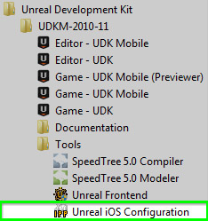
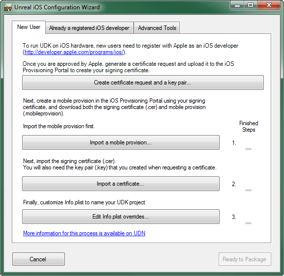
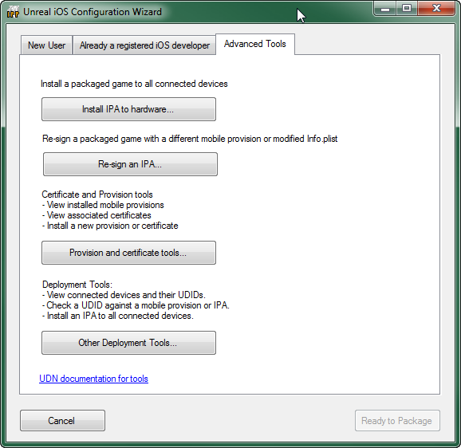
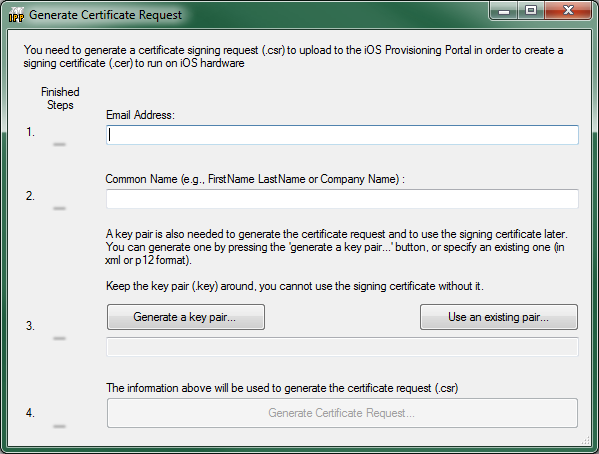
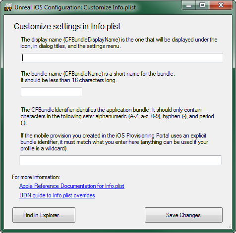
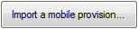
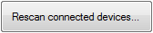

UDN
Search public documentation:
UnrealiPhonePackagerCH
English Translation
日本語訳
한국어
Interested in the Unreal Engine?
Visit the Unreal Technology site.
Looking for jobs and company info?
Check out the Epic games site.
Questions about support via UDN?
Contact the UDN Staff
日本語訳
한국어
Interested in the Unreal Engine?
Visit the Unreal Technology site.
Looking for jobs and company info?
Check out the Epic games site.
Questions about support via UDN?
Contact the UDN Staff
移动设备主页 > iOS Provisioning概述 > iPhonePackager工具
iPhonePackager 工具
概述
命令行接口
- iPhonePackager Command GameName Configuration [ switches ] [ RPCCommand ]
- 其中：
- Command - 工具的首要模式。
- GameName - 正在打包的游戏的目录名称(比如，UDKGame)。
- Configuration - 正在打包的游戏的编译配置 (比如，调试、发布、发行)。
- [ switches ] - 以空格作为分割的可选的开关参数，这些参数控制打包过程的各个方面(每个开关以 -开头)。
- [ RPCCommand ] - 用于某些命令的一个可选参数(特别是 rpc和部署)。
- packageapp - 收集并传送文件打包到一个远程Mac上，并生成一个应用程序目录，但是它不会创建IPA或者把文件复制回到PC上。这个模式要求在远程Mac机器上安装RPCUtility，它的设计是为了和XCode协同使用以便在Mac上进行进一步的调试。
- repackageipa - 收集文件并打包到一个IPA中，但是这个过程是在本地的PC上执行的。这个模式要求具有一个由先前的packageipa命令生成的一个存根文件。该命令可以和-sign结合使用来编码签名应用程序。
- packageipa - 收集并传送文件将其打包到一个远程 Mac上，并生成一个传送回来的IPA。需要在远程Mac机器上安装RPCUtility。该命令可以和-createstub结合是用来制作一个存根，以便稍后将该存根和repackageipa结合使用(packageipa -createstub针对iPhone平台编译UE3.sln所使用的默认模式)。
- install(安装) - 部署先前创建的IPA到本地机器连接的所有iOS设备中。要求安装iTunes。IPA或者基于 <GameName> 和 <Configuration>自动选择，或者如果传入命令行作为额外的参数它则使用精确的文件名称。(比如， "iPhonePackager deploy UDKGame Release C:\foo.ipa"将会安装C:\foo.ipa而不是<installpath>\Binaries\IPhone\Release-iphoneos\UDKGame\UDKGame.ipa)。
- resigntool - 直接启动重新签署工具。
- certrequest - 直接启动证书要求生成器工具。
- gui - 弹出配置向导 / 工具列表。请参照Unreal iOS配置向导页面。
- -interactive - 当将该开关和 -sign 协同使用时，如果没有满足所有的3个配置标准那么将会出现配置向导。
- Mobile provision(移动设备服务提供)位于 <InstallPath>\<GameName>\Build\IPhone目录中。
- 匹配安装的签署证书。
- PList覆盖位于 <InstallPath>\<GameName>\Build\IPhone\<GameName>Overrides.plist中
。 配置向导提供了一种优化的方式来提供这些文件，或者生成CSR请求来从Apple获得服务提供和证书。
- -verbose
- 启用更详细的输出，列出要打包的每个单独的文件等...
- -network
- 用于指出打包的IPA，将用于和网络文件加载协同使用(和 -distribution 不兼容)。
- -compress=best
- -compress=fast
- -compress=none
- 控制当创建IPA时针对压缩所做出的努力得多少。在开发过程中， -compress=none 会产生最快的迭代时间，从而节约在PC上的压缩时间和在iOS设备上的解压时间。当准备提交到App Store时，请使用 -compress=best 来获得更好的提交大小。
- -distribution
- 当设计要发布到App store的版本时使用该项。控制签署身份的选择和输出的IPA (Distro_GameName.ipa)名称。
- -sign
- 当载PC上打包的过程中执行代码签名。当在远程Mac上进行打包时，将总是执行代码签名。
- -strip
- 控制是否剥离可执行文件的符号。仅当在Mac上进行远程打包操作时需要注意这个问题。
- -createstub
- 控制Mac上的远程打包操作是否要打包所有内容或者仅打包必要内容和PC上返回的 .ipa的名称(.ipa or .stub)。这个选项和 -distribution 不兼容。
Unreal iOS配置向导
访问Unreal iOS配置向导
Unreal iOS配置向导可以从编辑器中、开始菜单中或者从Unreal Frontend中启动。 当您第一次将其部署到您的iOS设备上时它将自动启动，之后如果您想改变它内部的数据您将需要手动地启动它。
当您第一次将其部署到您的iOS设备上时它将自动启动，之后如果您想改变它内部的数据您将需要手动地启动它。
从编辑器中启动
如果已经进行了配置iOS provisioning (iOS服务提供)的步骤，那么当您点击工具条中的 Start this Level on iPhone(在iPhone中启动这个关卡) 时将会启动Unreal iOS配置向导。 首先会出现几个控制台窗口，然后会出现配置向导。
首先会出现几个控制台窗口，然后会出现配置向导。
从开始菜单启动
任何时候都可以通过使用Windows的开始菜单中的快捷方式启动Unreal iOS配置向导。该快捷方式位于Unreal Development Kit > [您的UDK版本] > Tools(工具) 的下面。

点击这个快捷方式将会打开配置工具，允许您从头开始配置您的 iOS provisioning(iOS服务提供)或者在开发过程中必要的时候更新该iOS provisioning。从UFE中启动
Unreal iOS配置向导可以通过直接点击 按钮来从Unreal Frontend 应用程序中直接启动。 点击这个按钮将打开配置工具，这允许您从头配置您的iOS provisioning或者在开发过程中在必要的时候更新它。
点击这个按钮将打开配置工具，这允许您从头配置您的iOS provisioning或者在开发过程中在必要的时候更新它。
配置向导界面
Unreal iOS配置向导界面包括一些选卡，每个选卡包含着provisioning(服务提供)和部署过程的各个部分的特定功能。 界面还包括两个总是有效的按钮：| 按钮 | 描述 |
|---|---|
| 关闭配置向导，如果正在进行打包则终止打包过程。 | |
 | 关闭配置向导，如果打包过程正在继续则继续打包。 |
New User(新用户) 标签
New User（新用户） 包含了以前没有开发过iOS应用程序的开发人员所需要的工具。
| 按钮 | 描述 |
|---|---|
| 打开Generate Certificate Request Window(生成证书请求窗口)。 | |
| 从Apple的开发者网站下载一个provisioning profile。 | |
| 导入开发证书和从Apple的开发者网站下载的密钥对。 | |
| 打开 Edit Info.plist Window。 |
Already a Registered iOS Developer(已经注册为iOS开发者) 标签
Already a Registered iOS Developer(已经注册为iOS开发者) 标签包含了以前开发过iOS应用程序的开发人员的工具，他们或者使用Unreal或者通过其他方法已经有了一个开发证书和provisioning profile(服务提供概述)。
| 按钮 | 描述 |
|---|---|
| 从Apple的开发者网站下载一个provisioning profile。 | |
| 导入先前从Apple的开发者网站下载的开发证书和密钥对，或者导入从Keychain Access导出的 a .p12文件。 | |
| 打开 Edit Info.plist Window。 |
Advanced Tools(高级工具)标签
Advanced Tools(高级工具) 标签包含了用于签署、安装及部署IPA的工具。
| 按钮 | 描述 |
|---|---|
| 安装打包的游戏(IPA)到所有连接的iOS设备上。 | |
 | 打开Signing Tool(签署工具)的Re-signing Tool(重新签署工具)选卡 。 |
 | 打开Signing Tool(签署工具)的Provisions and Certs(服务提供和证书)选卡。 |
| 打开Signing Tool(签署工具)的Deployment Tools(部署工具)选卡。 |
Tool（工具）窗口
Generate Certificate Request（生成证书请求）窗口
Generate Certificate Request(生成证书请求) 生成用于签署iOS应用程序的键值对和用于在Apple的开发者网站上生成证书的证书请求。
| 步骤 | 描述 |
|---|---|
| Email Address(邮件地址) | 和您的Apple iOS Developer账号相关的邮箱。 |
| Common Name(一般名称) | 和证书相关的名称。 |
| |
|
 | 生成要上传到Apple的开发者网站用于创建开发证书的证书请求文件 (.csr) 。 |

Customize Info.plist(自定义Info.plist)窗口
Customize Info.plist 用于编辑Info.plist文件的内容。
| 域 | 描述 |
|---|---|
| Bundle Display Name(包显示名称) | 这是显示在iOS设备上的名称，显示在主屏幕上的应用程序图标的正下方。您要确保这是个简洁的名称，以便它适合已分配的空间，不会被剪切掉。(示例: UDN iOS Game) |
| Bundle Name(包名称) | 用于标识应用程序的简略名称。这个名称应该小于16个字符。(示例: UDNiOSGame) |
| Bundle Identifier(包标识符) | 这个标识符应该和先前在Apple的开发者网站上创建的 App ID的包标识符相匹配。(示例: com.EpicGames.UDNiOSGame) |
| 按钮 | 描述 |
|---|---|
 | 打开一个文件浏览器显示 Info.plist文件，以便可以打开它并进行手动地编辑。 |
| 把上面域中的信息保存到 Info.plist文件中。 |
Signing Tool(签署工具)
签署工具是一组标签，每个标签具有特定的功能。这些标签及其功能的解释如下所示。Re-Signing Tool(重新签署工具)
重新签署工具 标签提供了快速并方便地修改 provisioning profile(服务提供概要)、证书或特定打包名称的Info.plist(IPA文件)的功能。 Input IPA(输入IPA)
Input IPA(输入IPA)
- 设置要重新签署的输入打包的游戏文件。
- Use existing embedded.mobileprovision(使用现有的嵌入的mobileprovision) - 不修改和IPA相关联的provision profile。
- Specify mobile provision file(指定mobile provision文件) - 设置用于替换当前provision profile的文件。
- Search for a matching certificate(搜索匹配的证书) - 搜索已经和签署IPA的证书相匹配的安装证书,并使用它来重新签署IPA。
- Specify an explicit certificate(指定一个明确的证书) - 设置用于替换当前证书的证书。
- Leave Info.plist unchanged(保持 Info.plist不变) - 不对IPA的当前Info.plist执行修改。
- Common Modifications(一般修改) -允许替换 Info.plist的非常通用的方面的信息。
- CFBundleDisplayName - 设置替换当前的‘bundle display name（包显示名称）’所使用的字符串。
- CFBundleIdentifier - 设置替换当前包标识符所使用的字符串。
- Full Editing - 允许导入IPA的 Info.plist，手动地进行编辑及重新导入。
按钮 描述 把IPA的当前 Info.plist导出到一个文件中，以便可以手动地编辑它。 
导入一个 Info.plist文件来替换IPA的当前Info.plist 。
- Compress Modified files(压缩修改的文件)? - 如果选中该项，将会压缩修改的文件。
| 按钮 | 描述 |
|---|---|
| 使用输入IPA重新签署IPA并执行特定的调整。 |
Provisions and Certs（服务提供和证书）
Provisions and Certs 选卡显示了当前安装的provisioning profiles(服务提供概述)和证书，并且可以导入额外的 provisioning profiles和证书。
| 按钮 | 描述 |
|---|---|
| 重新刷新 Installed Provisions(安装的服务提供) 列表。新安装的provisions(服务提供)和证书将不会显示，直到刷新列表为止。 | |
| 导入并安装一个新的证书。 | |
|  | 导入并安装一个新的provisioning profile。 |
Deployment Tools(部署工具)

| 按钮 | 描述 |
|---|---|
|  | 重新扫描连接的iOS设备并重新填充 Connected Devfices 列表。 |
 | 安装IPA到所有连接的设备上。如果应用程序正在设备上运行，那么安装完成时它将会被终止。但是，如果设备是空闲的(没有运行3D应用程序等)，那么安装速度进行的将更快。 |
 | 从所有连接的设备上卸载IPA。 |
这个命令把Documents目录中的所有文件备份到[安装路径]\[GameName]\iOS_Backups\[DeviceName]目录中，这里的
| |
| 判断输入的设备ID是否和IPA相关联。 | |
 | 判断输入的设备ID是否和mobile provision相关联。 |
- 打开
/binaries/iPhone/中的 IPP.exe - 在配置工具选项卡中，选择该设备并点击 Backup Documents（备份文档）
- 浏览至您在设备上使用的 IPA。例如，如果您已经烘焙了 Release UDKGame，那么 IPA 为：
\Binaries\IPhone\Release-iphoneos\UDKGame\UDKGame.ipa。 - 文件将会被保存到
\UnrealEngine3\UDKGame\iOS_Backups\ - 然后您可以通过相关的应用程序打开任意分析文件，例如，GameplayProfiler.exe。